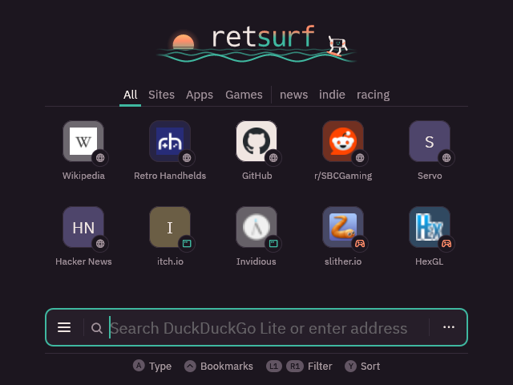

Your start page is a launcher
Every bookmark is a tile on the start page. Open it as a site, as an app without the browser around it, or as a game in game mode.
Filter by sites, apps, games or your own tags, sort by hand, by name or by last opened, and lay it out as a grid or a list in three sizes.
Every bookmark keeps its own settings, from the user agent and dark mode to game mode, and closing an app or a game takes you back to the start page.
